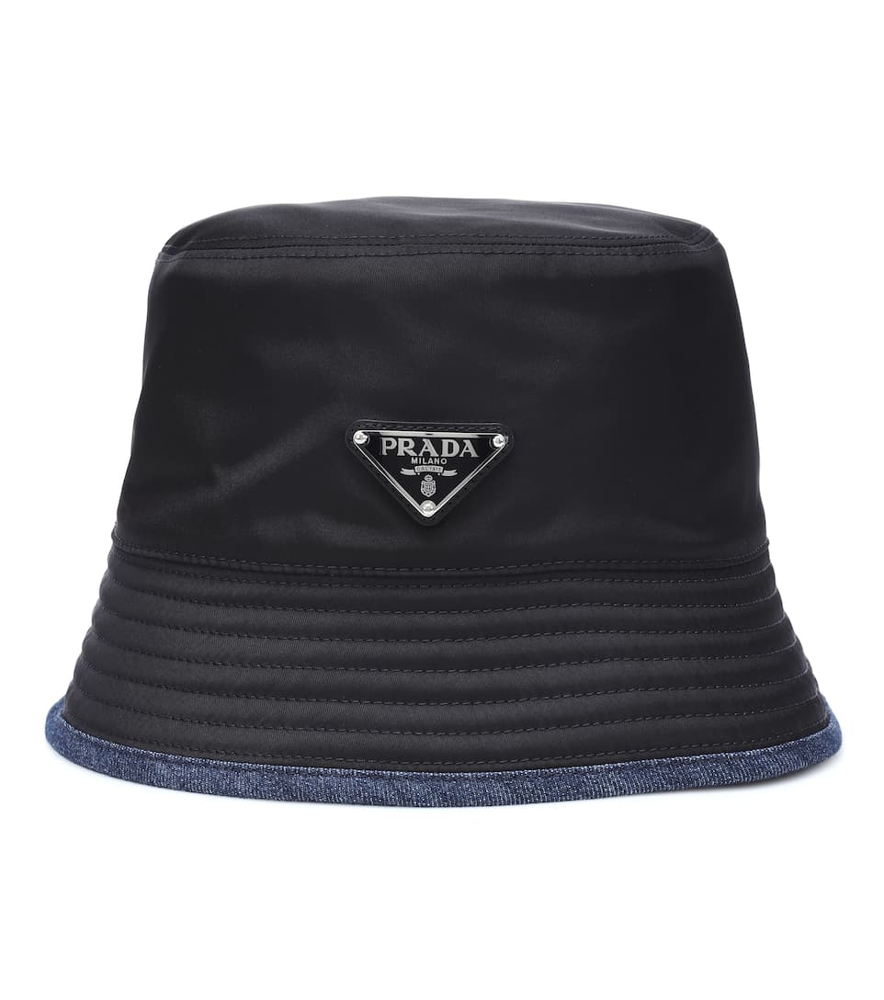

Exit la casquette: le bob persévère, et confirme sa position en tête des accessoires indispensables de l’été 2020. Privilégiez-le aux accents bohème chez Loewe, version denim imprimé chez Marine Serre ou encore piqué d'une couleur unie vibrante à l'image de Prada. Zoom sur les 10 bobs que l'on verra partout cet été.
